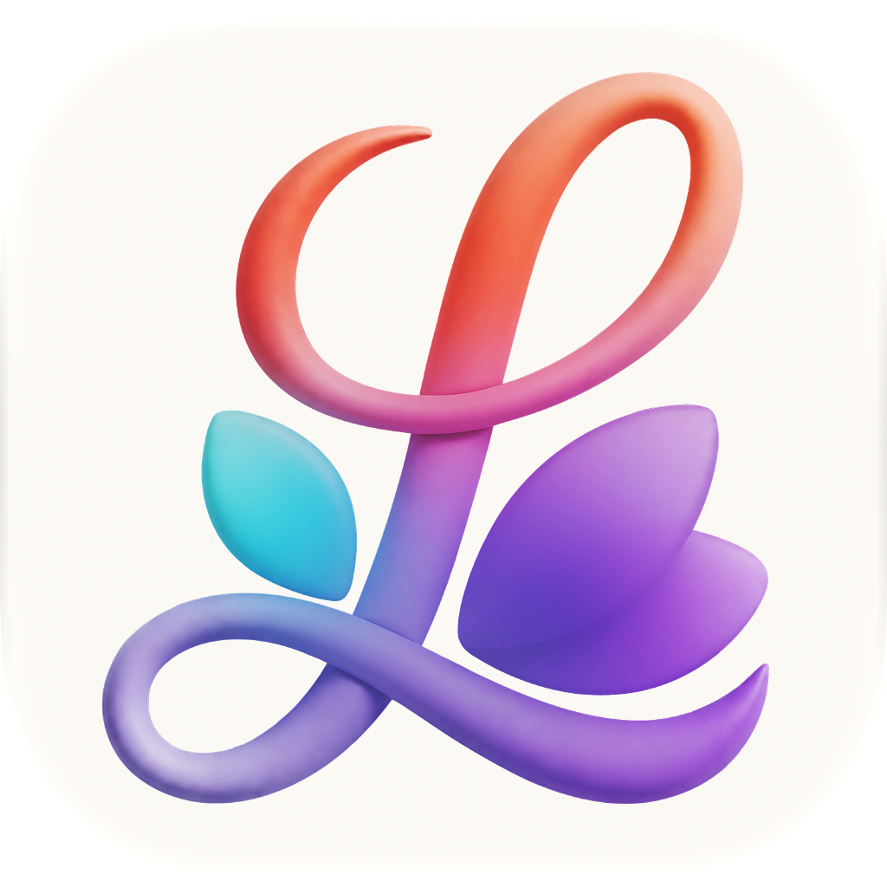
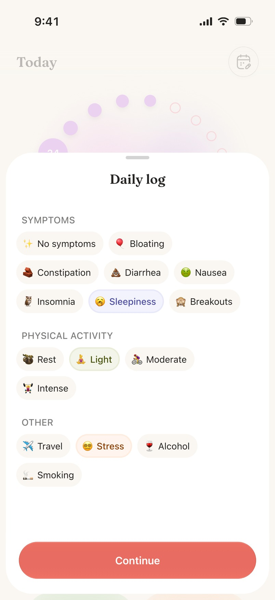
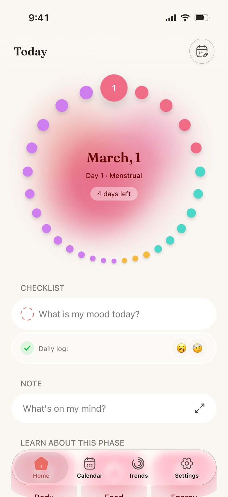
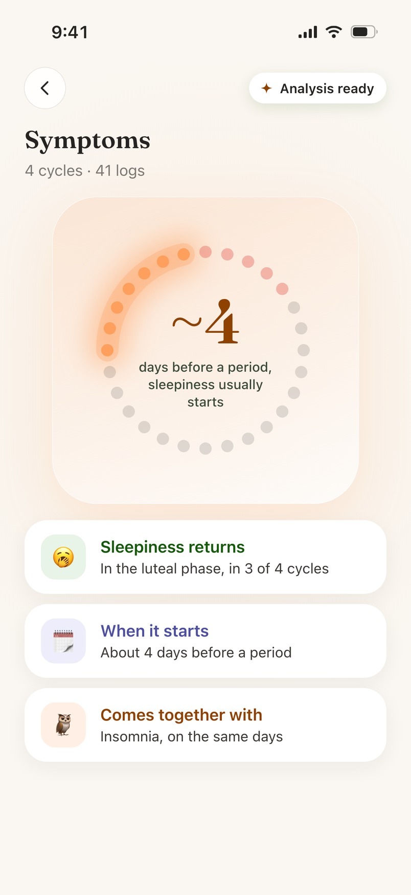
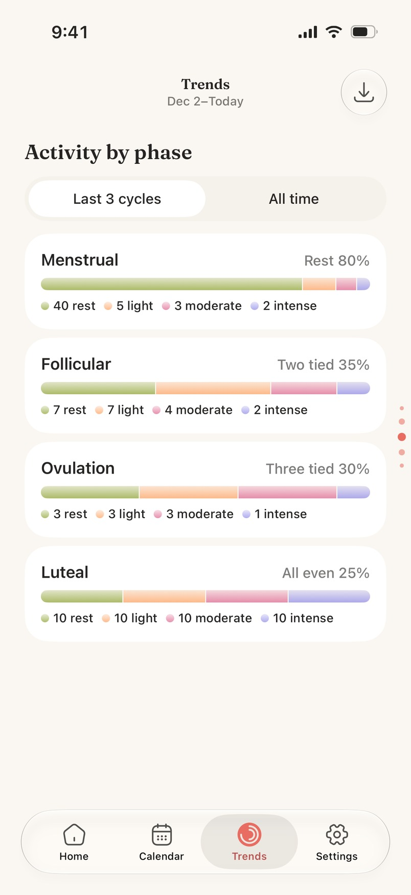

01
Set your cycle
Say what you want to track, pick the first day of your last period and your usual cycle and period length. You can import your history from Apple Health — or skip it.

Calm. Private. Yours.
Log your period, flow, mood and symptoms in a calm private space. See your whole cycle as one ring, learn what tends to repeat, and keep the picture on your device — no account, no ads.



Setting up takes about a minute. After that it is a few taps a day.
Say what you want to track, pick the first day of your last period and your usual cycle and period length. You can import your history from Apple Health — or skip it.
Flow, mood, energy, symptoms, discharge, pain, activity, sex and protection, a note. Tags instead of forms, so most days take seconds.
The ring shows where you are today, phase cards explain what usually comes with it, and Trends shows what repeats across months.
Built around the four phases, with the detail you actually reach for — and the calm to leave the rest alone.
Menstrual, follicular, ovulation and luteal on one ring, with today's cycle day, the days until your next period and the expected date range — not a single confident guess.
Flow intensity, five levels of mood and energy, symptoms, discharge, pain, physical activity, sex and protection, and a free note. Every day stays editable from the calendar.
Six AI cards on Home, each opening a plain-language analysis of your own logs: what tends to come together, when it usually starts. Runs on Apple Foundation Models, on device.
Cycle and period length, flow, mood and energy by phase, top symptoms, activity, sex activity and lifestyle correlations — switch between your last three cycles and all time, then export a clean PDF for your doctor.
No account, no ads, no data brokers. Your logs live on your device; iCloud sync is optional and stays in your own Apple account. Apple Health import and export are optional too.
A gentle heads-up before your period window, a nudge for the daily log, a reminder before a trial ends — plus Home and Lock Screen widgets and a one-tap “log today” control.
Lunel lines your logs up against your cycle, so the question stops being “why do I feel like this?” and becomes “of course — it is day 24”.
Cycle length, period length and flow intensity trends are free. The rest of the blocks and the PDF export come with Lunel Plus.

Tracking a cycle is free and stays free. Lunel Plus is for the parts that take more work — and more of your history.
Everything you need to follow a cycle, without an account.
No ads, no sign-up, no limit on how much you log.
For patterns that only appear once there is history to compare.
Monthly or annual, with a free trial when the App Store offers one. The price is always shown in the app before you buy, and you cancel in your App Store settings.
The short version — the full document is one click away.
Lunel is not a medical device and not a birth-control method. Predictions are statistical estimates, and decisions about your health belong with a healthcare professional.
Lunel Plus renews automatically through your Apple ID until you cancel at least 24 hours before the period ends. Trials, prices and limited-time offers are shown in the app before you buy.
One personal licence for devices you own or control. No resale, no reverse engineering, no use that breaks the law or someone else’s rights.
What stays on your device, what leaves it, and why.
Period days, symptoms, moods, notes and sex logs are stored locally. There is no Lunel account and no Lunel server holding them.
Anonymous product analytics, subscription status through Apple and Apphud, and — only if you allow it — Apple Health and iCloud. Your logged health values never go into analytics.
Skip Apple Health, keep iCloud sync off, delete single entries or all data in Settings, and revoke Health access in iOS Settings. Write to us for any privacy request.
Everything below is how the app behaves today.
Yes. Cycle tracking, the daily log, the calendar, reminders and widgets are free, with no ads and no account. Lunel Plus is an optional subscription for AI insights, the deeper Trends blocks, PDF reports and iCloud sync.
Lunel Plus unlocks the AI insight cards on Home, the paid Trends blocks (mood and energy by phase, top symptoms, activity, sex activity, insights and lifestyle correlations), a PDF report of your Trends, and iCloud sync between your devices. Cycle length, period length and flow intensity trends stay free.
No. Lunel works without sign-up, email or password. You open the app and start logging.
Your logs stay on your device by default. If you turn on iCloud sync (Lunel Plus), they are also stored in your private iCloud account through Apple CloudKit — we run no server of our own. Anonymous product analytics never include what you logged: no dates, symptoms, moods or notes.
Optionally. With your permission, Lunel reads your menstrual flow records and a few physiological signals from Apple Health to improve predictions, and writes the period days you log back to Apple Health. Nothing is accessed until you allow it, and you can revoke access in iOS Settings at any time.
When the App Store offers an introductory offer, you can start Lunel Plus with a free trial. Lunel reminds you the day before the trial ends, and you can cancel in your App Store settings at least 24 hours before it renews.
Deleting Lunel removes the logs from that device. With iCloud sync or an iPhone backup, your data comes back when you reinstall or set up a new device. Records written to Apple Health are separate and stay in the Health app.
Lunel runs on iPhone and iPad with iOS 18 or later, in English, Russian, French, German, Spanish (Spain and Latin America) and Portuguese (Brazil and Portugal). AI insights need a device that supports Apple Foundation Models; everything else works without it.
No. Lunel is not a medical device or a birth-control method. Predictions are statistical estimates based on your logs and can be wrong, so they should not be used to avoid or plan a pregnancy. Talk to a healthcare professional for medical questions.
Write to us — a person reads every message.
Free to download, about a minute to set up — and your data stays yours.